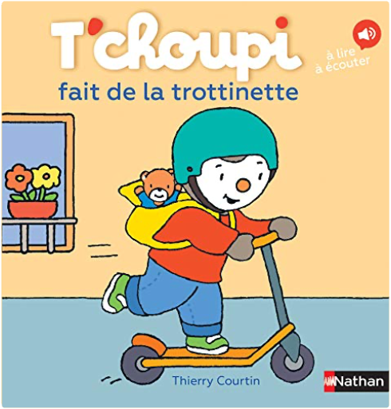

T'choupi, tome 66 : va au zooThierry Courtin T'choupi, tome 66 : va au zooThierry Courtin  Avec T'choupi découvre les animaux du zoo T'choupi, tome 67 : fait de la trottinetteThierry Courtin Aller à l'école en trottinette, c'est plus rigolo! T'choupi, tome 69 : ne fait plus pipi au litThierry Courtin T'choupi ne fait plus pipi au lit ! |


 Made with Delicious Library
Made with Delicious LibraryNancy, State zipflap congrotus delicious library Thomas, Julien